Our project involves developing an integrated IoT-based system to assist in rehabilitation and
physiotherapy processes for patients. The idea stemmed from the increasing shortage of physiotherapists
relative to high patient volumes in healthcare systems worldwide. Long wait times for appointments can
severely hinder recovery and progress.
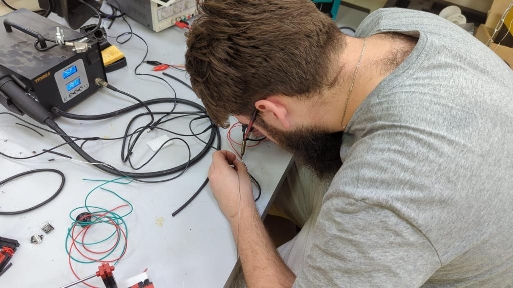
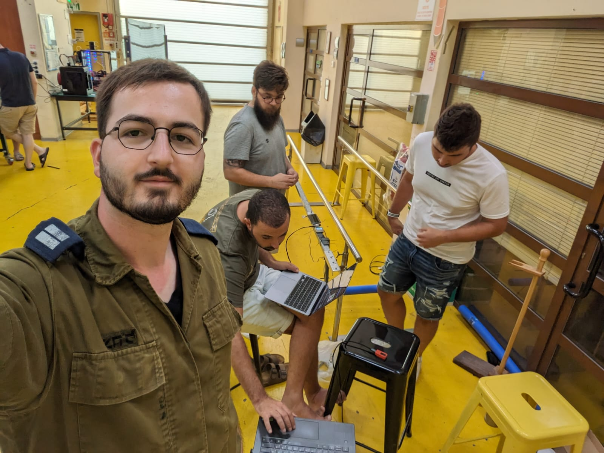
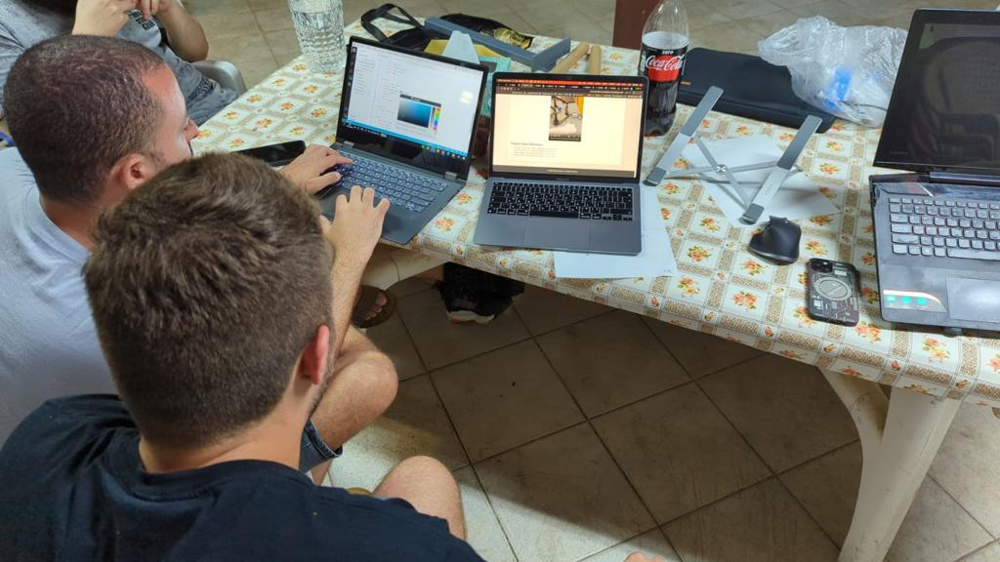
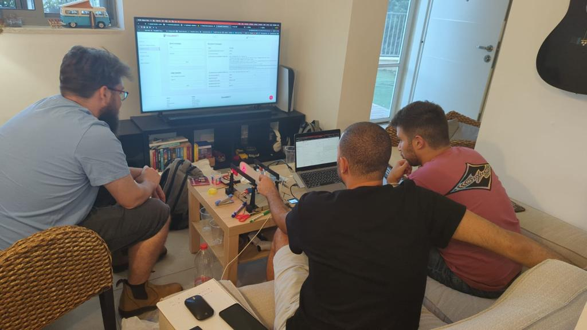
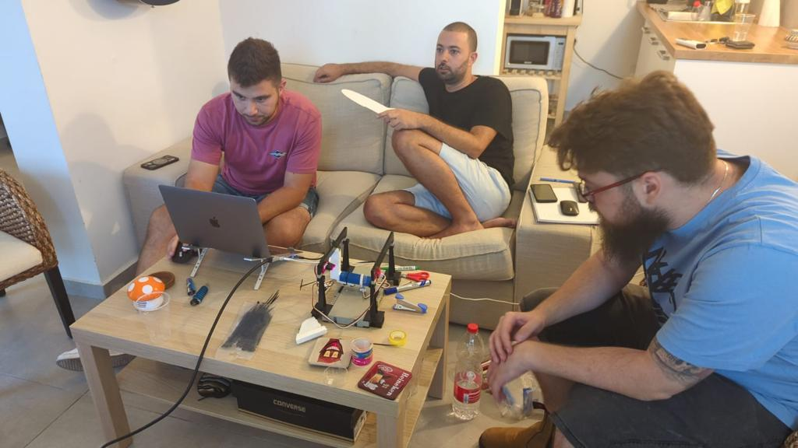
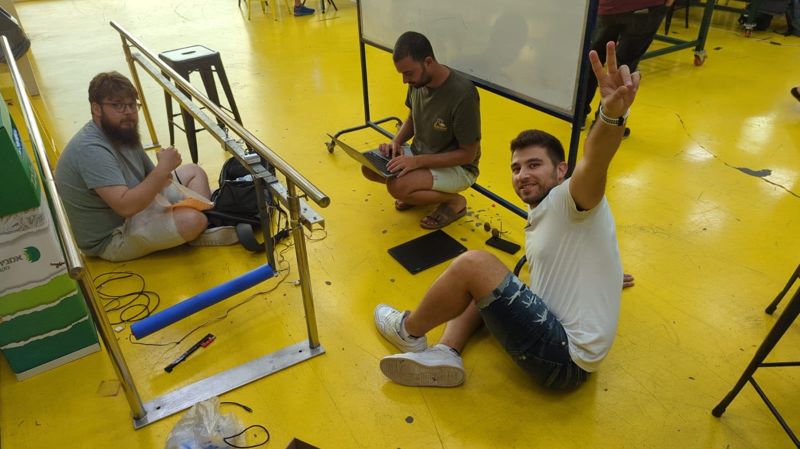
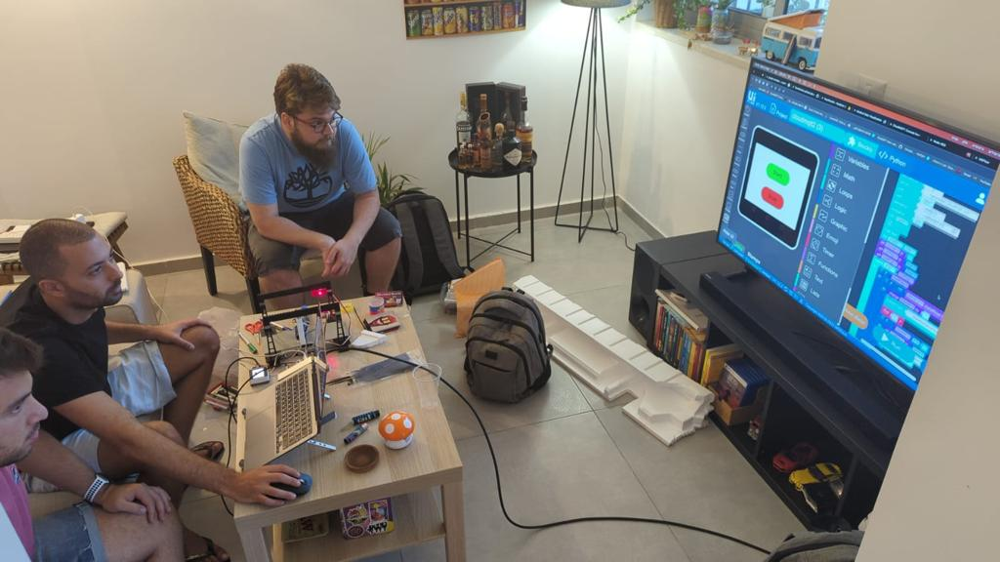
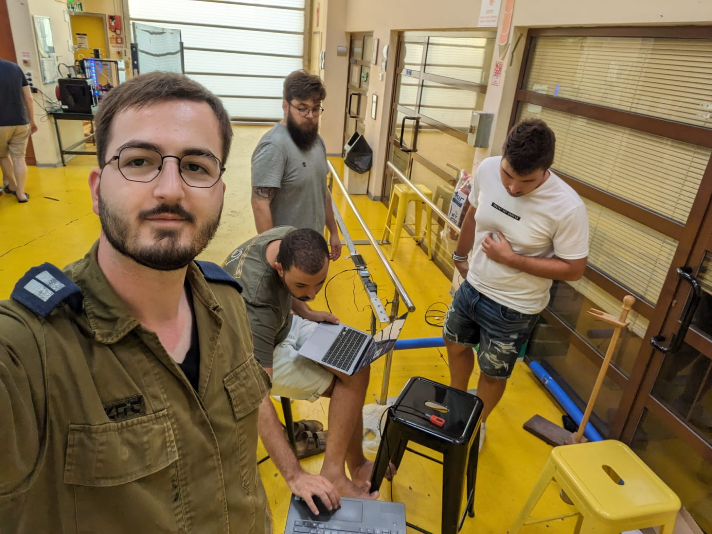
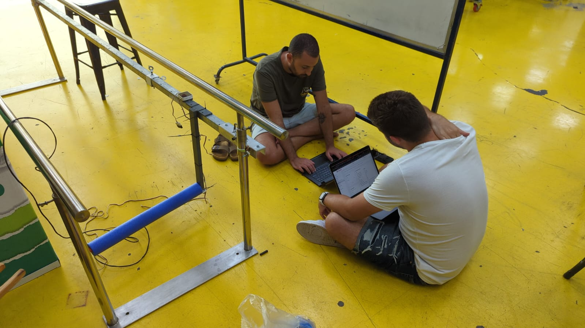
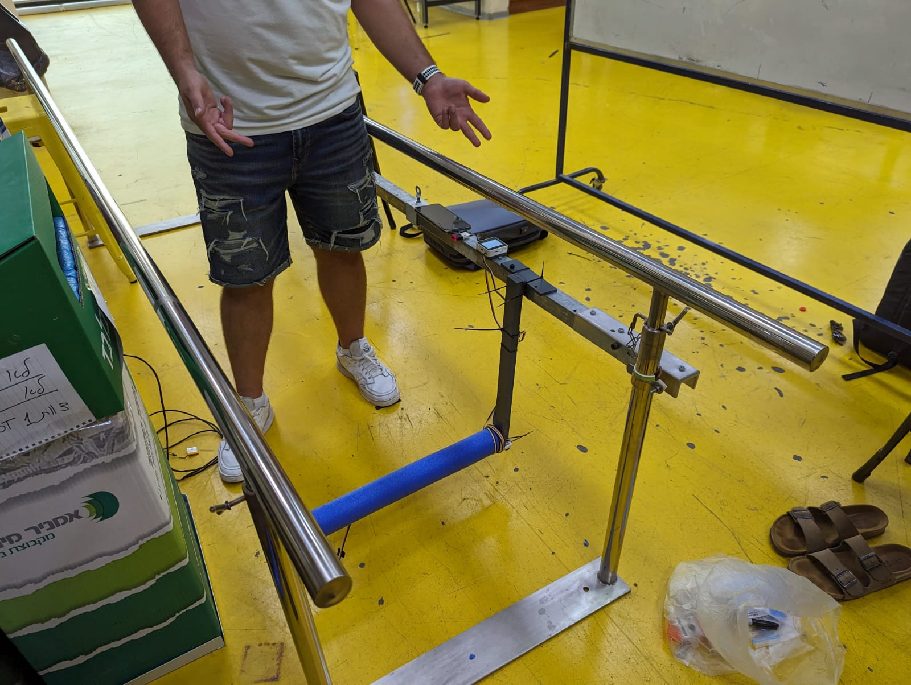
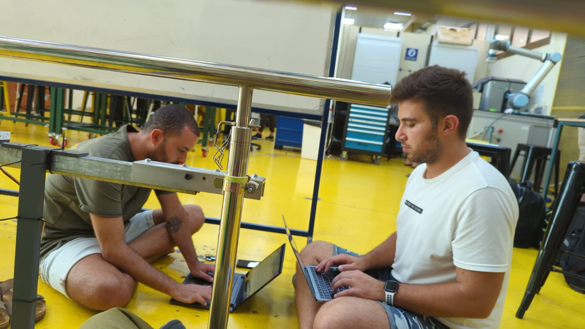
System Components
Walking Track: Adjustable walking track constructed from aluminum
framing and rubber mats, ranging from 1-2 meters in length. Obstacles are positioned along the
track, controlled by servo motors connected to a microcontroller. Obstacle heights range from
0-30cm.
Sensors: An array of ultrasonic and optical infrared sensors
precisely detect patient contact and collisions with obstacles during exercises. Signal data is
transmitted to the microcontroller and RPi.
Web Application: Built with React, it enables physiotherapists to
easily input customized training programs for each patient. Parameters include exercise duration,
walking pace, number of laps, and obstacle heights/positions tailored to the patient's needs and
progress.
Database: A cloud-based Firebase database securely stores
exercise session data and analysis. MQTT protocol enables real-time data transmission from sensors
to database. Historical data is available for progress monitoring.
Electronics: Modular electronics design allows for scalability
and customization. Components integrate via IoT protocols like MQTT and REST APIs.
Key Benefits
Resourcefulness: Saves healthcare system time and resources
Speed: Shortens patient waiting times and rehabilitation process
Capacity: Ability to treat larger number of patients
Monitoring: Continuous progress and performance tracking
Quantified Benefits
Efficiency: Reduces average physiotherapist workload per patient
by 50%
Accessibility: Cuts patient waiting times for appointments by 25%
on average
Capacity: Increases patient capacity per physiotherapist by 20%
The system is currently in prototype development and testing stages. We aim to expand its use among
rehabilitation centers and hospitals nationwide.